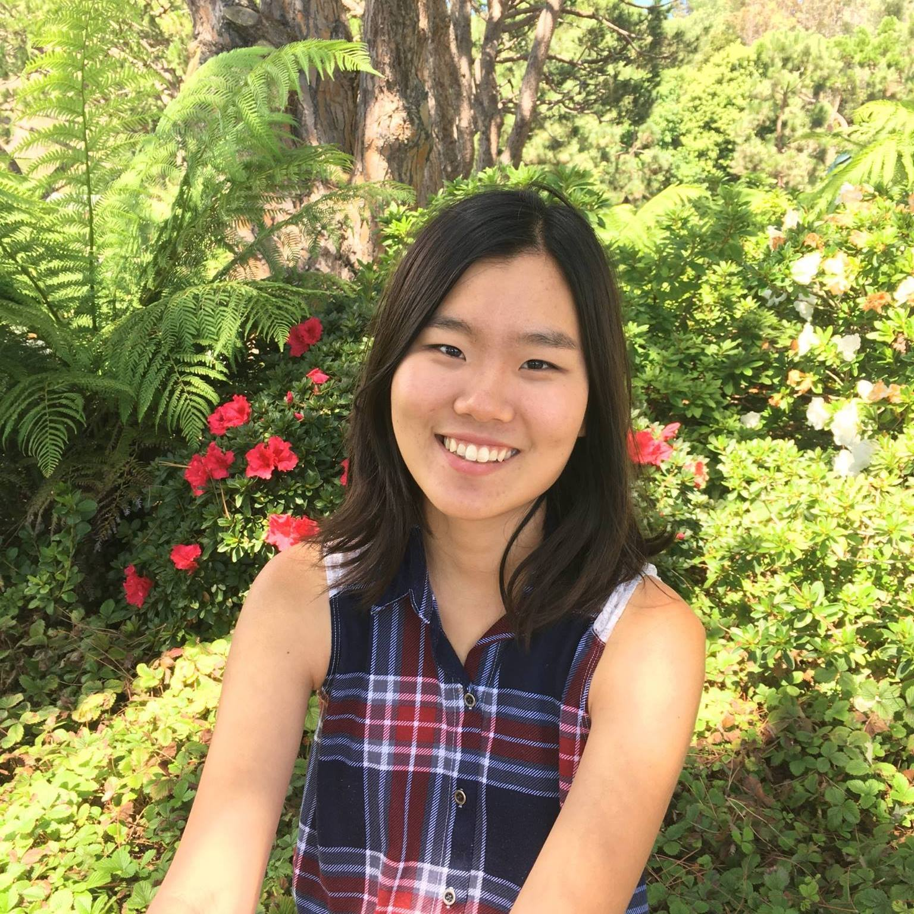

About Me

Hello! My name is Eustina Kim and I am a senior at UCLA majoring in Statistics and minoring in Digital Humanities. I'm very excited to take DH151 because it covers many topics that I've wanted to learn before.
For instance, I've been wanting to make a portfolio website or a blog showcasing my data analysis projects but I gave up on it because I didn't know how to work with html/css.
But if you are on this website, it means that now I know how to :). I'm also looking forward to learn how to make cool web maps because I've definitely struggled on it in the past.
Few months ago, I was supposed to make a map of businesses that opened and closed in Westwood to be embedded part of a Daily Bruin article but I ended up using R instead of html/css because I was more familiar with R as a statistician.
If you want to check out the article, click here.
Overall, I think taking this class will give me more tools to work with when I'm visualizing data!
Please check out my Github and LinkedIn if you want to connect.
Here are some fun facts about me
- I like anything that's matcha flavored!
- I've lived in three countries:
- I like cooking, listening to K-pop, watching random videos on Youtube and reading.
- I've been trying to get into crafting more! I recently learned felting and crocheting.